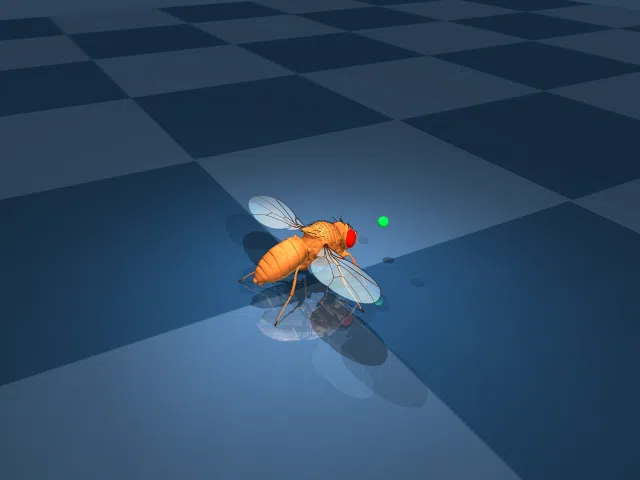

Тройной эффект подтверждён:
Gamma Ring (Cluster 1, 5K GABA, 36Hz) +
VNC CPG (133K feedforward chains) +
Astrocytes (gap μ=0.8, ×5 walking neurons)
22 mm/s без астроцитов (clip=0.005) →
157 mm/s с Gamma Ring + Astrocytes (clip=0.5)
×7 усиление от интеграции всех компонентов!